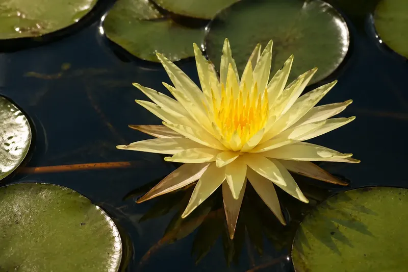

Растения для пруда
Нимфея “Пинвэир”
Цена и наличие
- C2-C5160 BYN / шт.В наличии
Данные на 23.11.2026.
Характеристики
- Размер сорта
- Средний
- Глубина посадки
- 30-60 см
- Диаметр цветка
- 10-15 см
- Диаметр покрытия воды
- 1-1,2 м
- Тип корневища
- Tuber
Описание
Нимфея «Пинвэир» — это декоративное водное растение, идеально подходящее для оформления прудов и водоемов.
Нимфея «Пинвэир» (Pinwaree) — декоративное водное растение, идеально подходящее для озеленения прудов и декоративных водоемов. Ее крупные округлые листья плавают по поверхности воды, создавая приятную тень и препятствуя росту нежелательных водорослей. Цветки нимфеи нежные и изящные, обычно светлых оттенков, которые придают водоему особую красоту и уют. Это растение неприхотливо в уходе и хорошо переносит разные погодные условия, что делает его отличным выбором как для опытных садоводов, так и для новичков. Нимфея «Пинвэир» помогает поддерживать естественный баланс в экосистеме пруда, улучшая качество воды и создавая благоприятные условия для обитания рыб и других водных обитателей. Посадка и уход за нимфеей не требуют больших усилий: растение нужно разместить в солнечном или слегка затенённом месте, обеспечив достаточную глубину воды (обычно от 30 до 60 см). Регулярный полив и подкормка удобрениями для водных растений помогут поддерживать здоровье нимфеи и красивый внешний вид. Таким образом, нимфея «Pinwaree» — это прекрасное решение для тех, кто хочет создать живописный и экологически сбалансированный пруд, добавив в него естественную красоту и свежесть.